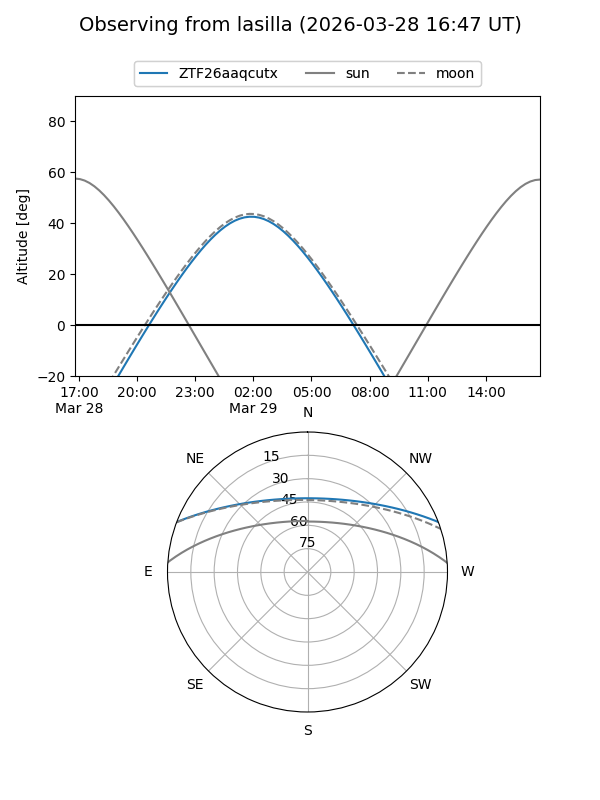
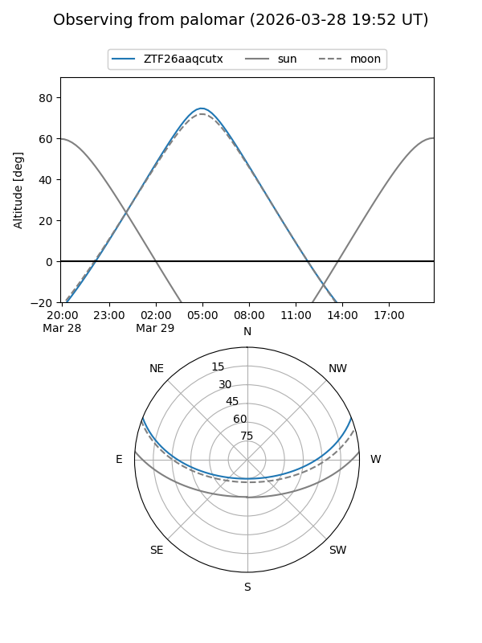

ZTF26aaqcutx
Target ZTF26aaqcutx at 2026-03-29 05:50
Aliases and brokers:
FINK: link
Lasair: link
ALeRCE: link
alt names
ZTF26aaqcutx (ztf,fink_ztf)
Coordinates:
equatorial (ra, dec) = 143.7868,+18.27300
equatorial (HMS+DMS) = 09:35:08.84,+18:16:22.80
galactic (l, b) = (213.2994,+44.15514)
Flags:
Photometry:
last ztfg=17.56, ztfr=16.78
1 ztfg, 1 ztfr detections
Lightcurve
Visibility


Additional plots